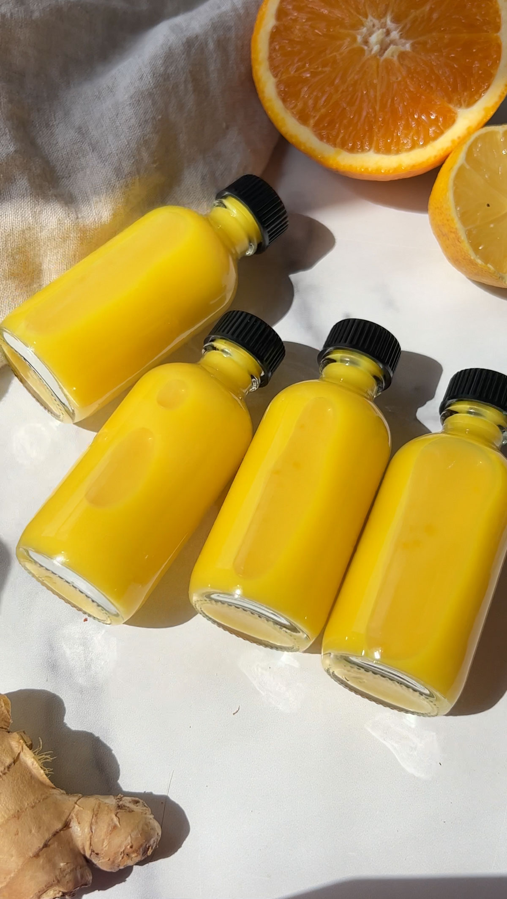

Home
Ginger Shots

Energize your day with the vibrant, spicy, and invigorating flavor of homemade ginger shots. Ginger and turmeric are two of nature's most potent superfoods with plenty of immune-building, anti-inflammatory, and anti-oxidant benefits! They're easy to make at home with just six simple ingredients in a blender or juicer.
Ingredients
- 1 Orange
- 3 Lemons
- 1/2 lb Fresh ginger
- 1 medium Root of turmeric
- Pinch Cayenne pepper
- 1/2 cup Coconut water or regular water
Steps
- Wash all of the produce. Cut off the peel from the orange and lemon and chop up the ginger (no need to peel it).
- There are two ways that you can make ginger shots. One method is using a juicer, and the other is just using a sieve (if you do not have a juicer).
With a Juicer
- If have a juicer, simply place all of the ingredients in the juicer and juice them.
In a Blender
- If have a juicer, simply place all of the ingredients in the juicer and juice them.
- Once you've blended everything, pour the mixture over a sieve to separate out the pulp. I transferred my pulp to my a juice press to separate the pulp from the juice, which does the same thing.
- Pour the ginger shots into small glass bottles, or transfer to a larger bottle and then pour into shot-sized glasses when you're ready to enjoy them!
- This recipe makes 6 large ginger shots.